T09 정보 강조 · T04 카드 높이
2026-11-03 실제 앱 캡처입니다. 브리핑은 한국어·DUNE 어두움, 컨디션은 영어·DUNE 밝음과 opt-in 100점/이전 RHR fixture입니다. 사용자 첨부의58점·Ocean 화면과 같은 입력이나 테마가 아닙니다. 검사는 모의 입력 데이터를 사용하며 시안의 예시 수치를 제품 코드에 하드코딩하지 않았습니다. 최대 글씨에서 화면 위·아래로 스크롤된 내용은 카드 자체의 잘림과 구분합니다.
리뷰 보완 후 단위35개(초기33개), iPhone 핵심 UI4개, iPad 관련 UI2개가 통과했습니다. iPhone은1206×2622, iPad mini는1512×2316 원본입니다. Duo 접힘·펼침 T04/T09는 제어 도구 연결 제한으로 새 캡처 미완료이며 이전 PNG를 이번 구현 증거로 재사용하지 않았습니다. 최초 제목2.667pt 차이는 보존하고 아이콘 영역 보정 후 관련2개가 통과했습니다. 브리핑2개는 해당 파일이 동일한 실행 근거를 재사용합니다. 전체 회귀 통과를 뜻하지 않습니다. 캡처 출처·해시 · 기기별 검증 기록
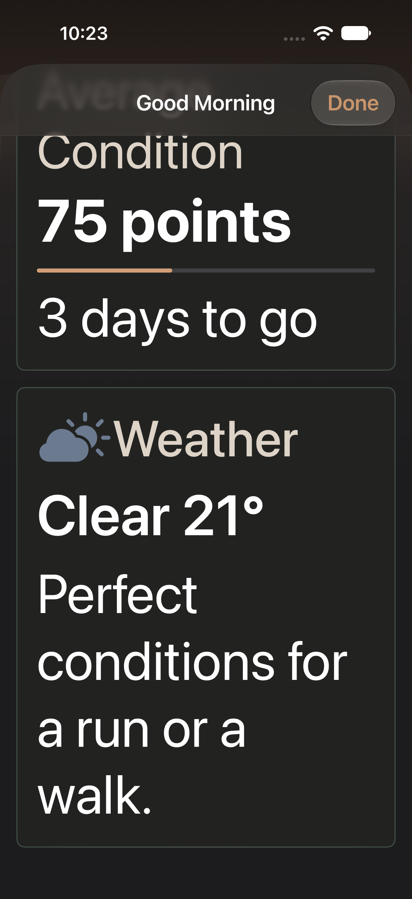
T09 dark maximum text dashboard-morning-briefing-weather-message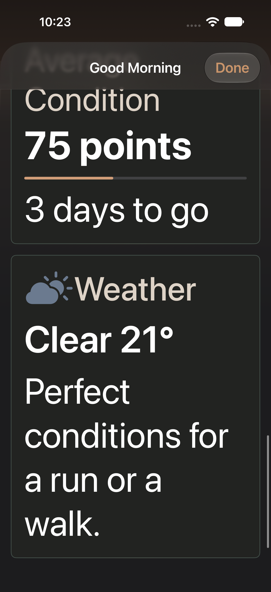
T09 dark maximum text weather title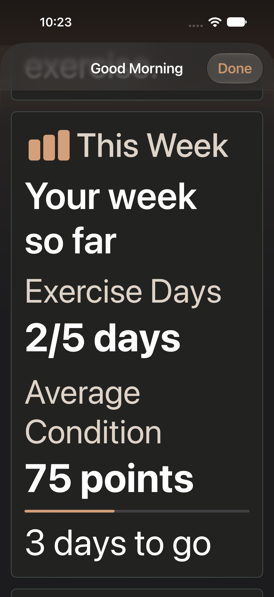
T09 dark maximum text dashboard-morning-briefing-weekly-average-valueT09 dark maximum text dashboard-morning-briefing-weekly-exercise-value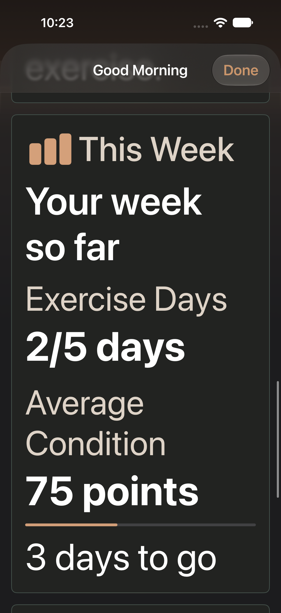
T09 dark maximum text weekly title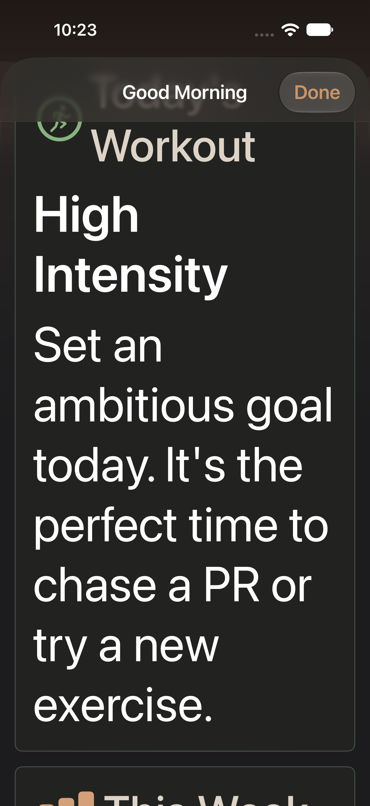
T09 dark maximum text dashboard-morning-briefing-guide-message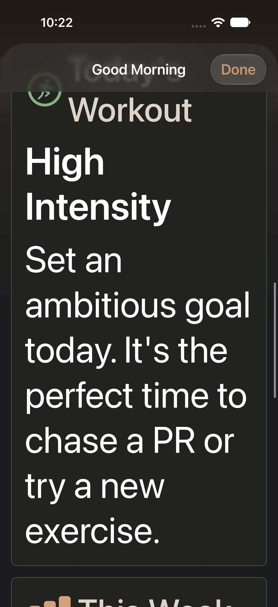
T09 dark maximum text guide title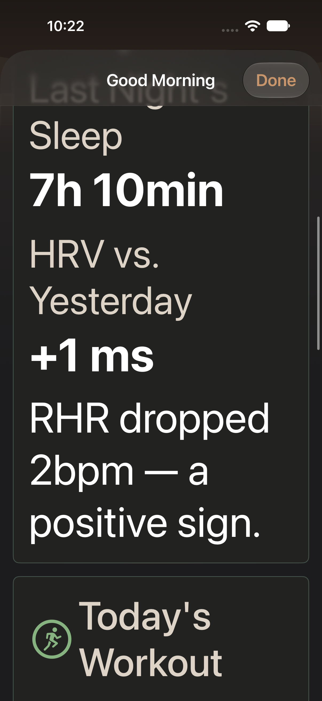
T09 dark maximum text dashboard-morning-briefing-recovery-hrv-valueT09 dark maximum text dashboard-morning-briefing-recovery-sleep-value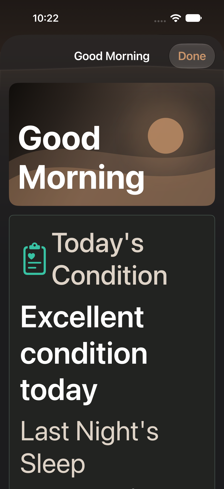
T09 dark maximum text recovery title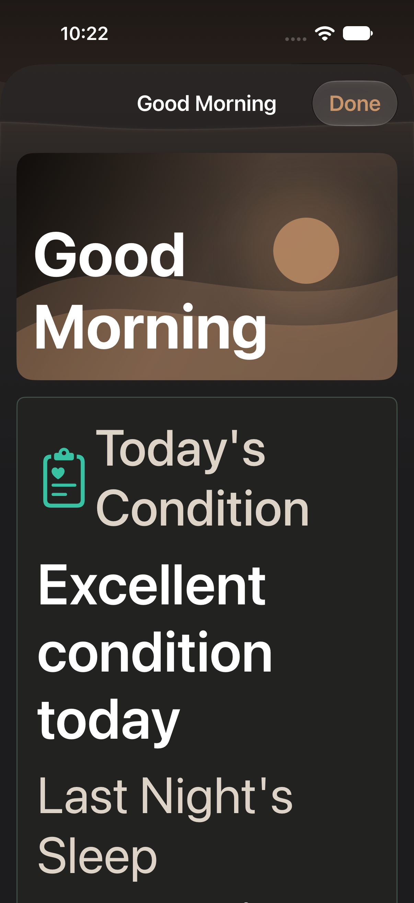
T09 dark maximum text heroT09 information first Korean weeklyT09 information first Korean recovery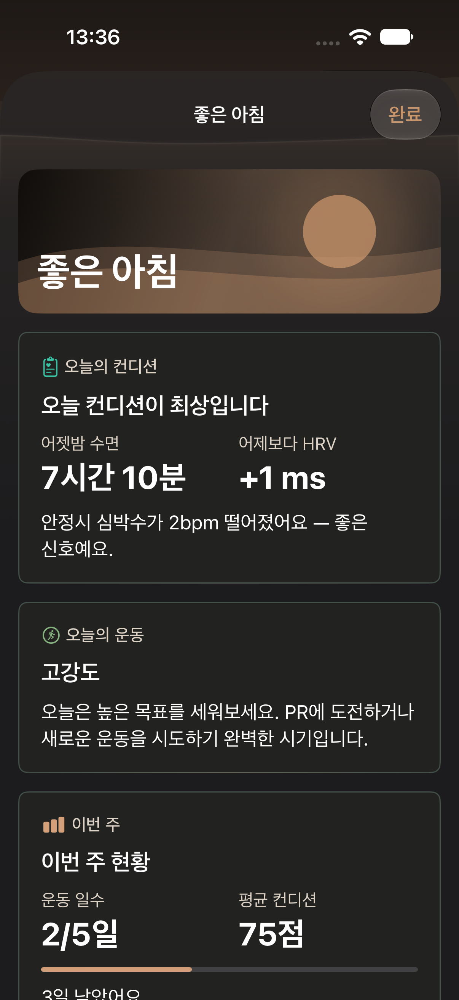
T09 information first Korean top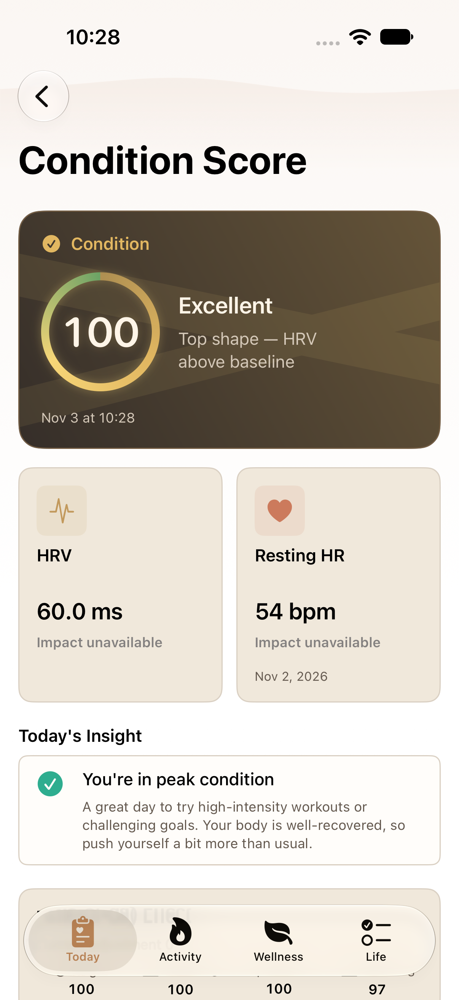
screen-0-1206x2622-Condition aligned contribution cards with prior RHR date screen-0-1512x2316-Condition aligned contribution cards with prior RHR date
screen-0-1512x2316-Condition aligned contribution cards with prior RHR date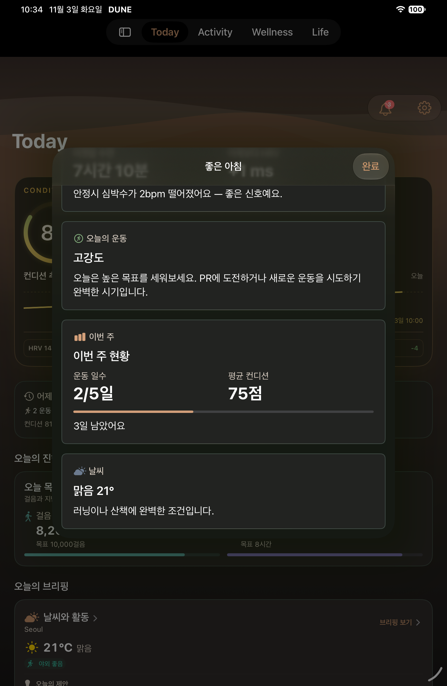
T09 information first Korean weekly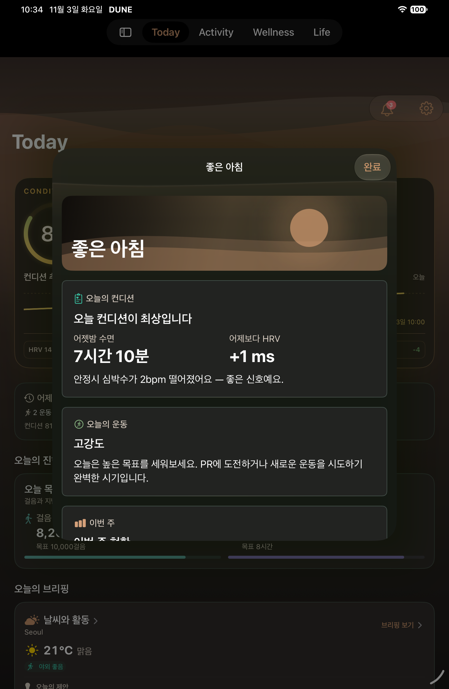
T09 information first Korean recovery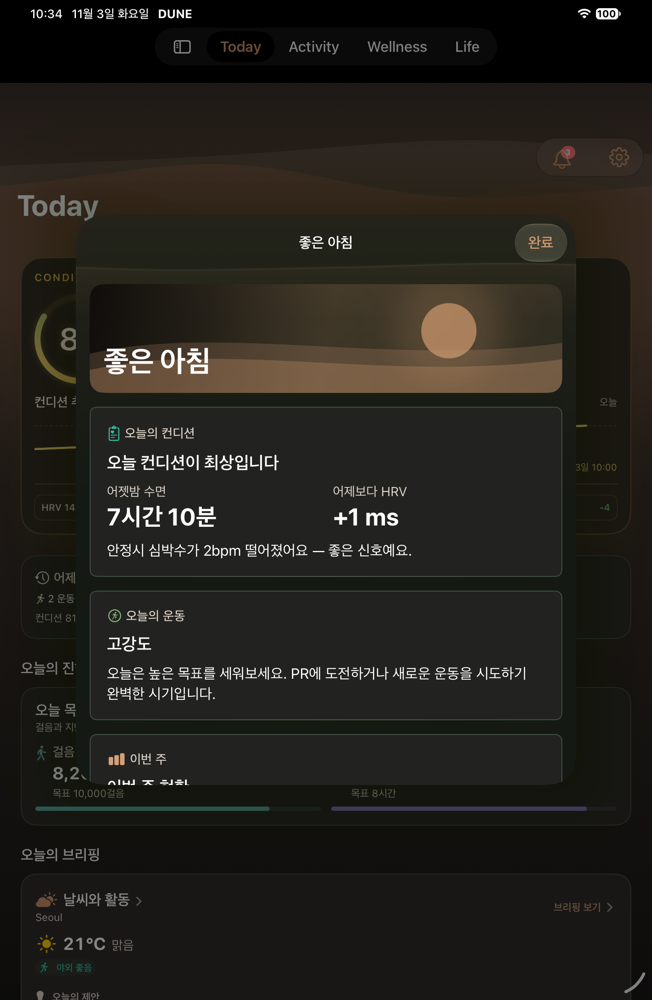
T09 information first Korean top최초 실패 기록
아래 이미지는 아이콘 보정 전 제목 시작선2.667pt 차이를 검출한 실행이며 최종 구현 증거가 아닙니다.
최초 실패 원본